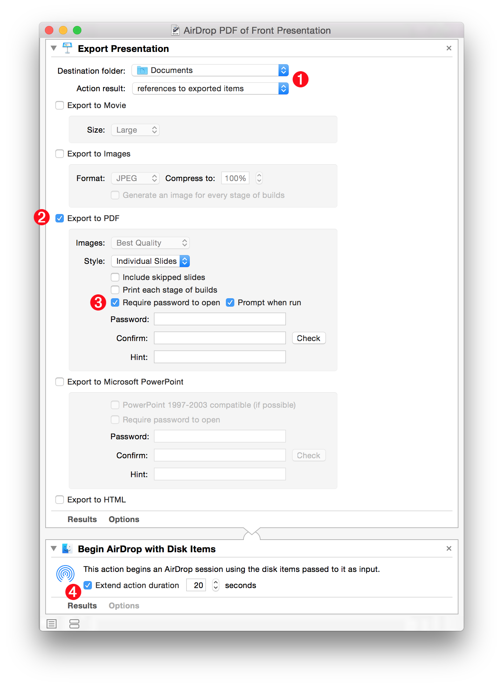
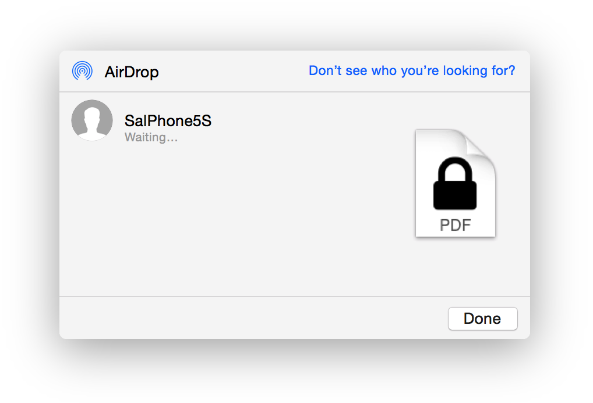

A workflow doesn’t have to be complex to be very useful. The “AirDrop PDF of Front Presentation” Automator workflow can be used to quickly export a PDF version of a presentation to another computer or iOS device.
The workflow contains two actions: one for exporting the front presentation to an encrypted PDF file; and one for beginning an AirDrop session with the new file. The Export Presentation action is used to create the encrypted PDF file.
1 Output Settings • Select the folder in which to export the file, and set the action result to be a reference to the exported file.
2 Export to PDF option • Select the checkbox for exporting the presentation to PDF.

3 Encryption Option • Select the option to encrypt the PDF file with a password. If you want to use the same password for every export, enter the password to use for exported files, otherwise select the option to be prompted for the password when the parent workflow is executed.
4 AirDrop action • This action will begin an AirDrop session with the exported file. If this action is not executed from within Automator or other application that stays open after running the workflow, select the option to extend the action’s duration and choose a value (in seconds) that the AirDrop dialog should remain visible.
Once the PDF export has completed and the AirDrop session begun, select the target device from the AirDrop dialog to begin the transfer (⬇ see below )

DOWNLOAD an installer for the example workflow that will activate the Script Menu and install the workflow into the Keynote Scripts folder. Once installed, the workflow can be executed from the Script Menu when Keynote is the frontmost application.
TIP: To open the workflow for editing, select it from the Script Menu while holding down the Option key. To reveal the workflow in the Finder, select it from the Script Menu while holding down the Shift key.